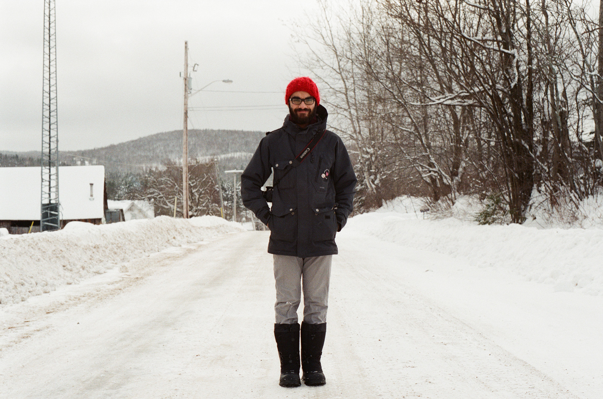

Team

Asad Chishti
Asad is a practicing ethnographer and photographer whose skillsets include facilitation, research, and radio production. He cycled across Canada solo while researching happiness in 2013.
Get in contact if you would like more information.

Asad Chishti
Asad is a practicing ethnographer and photographer whose skillsets include facilitation, research, and radio production. He cycled across Canada solo while researching happiness in 2013.
Get in contact if you would like more information.